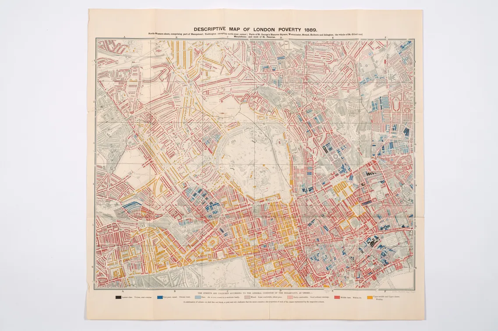
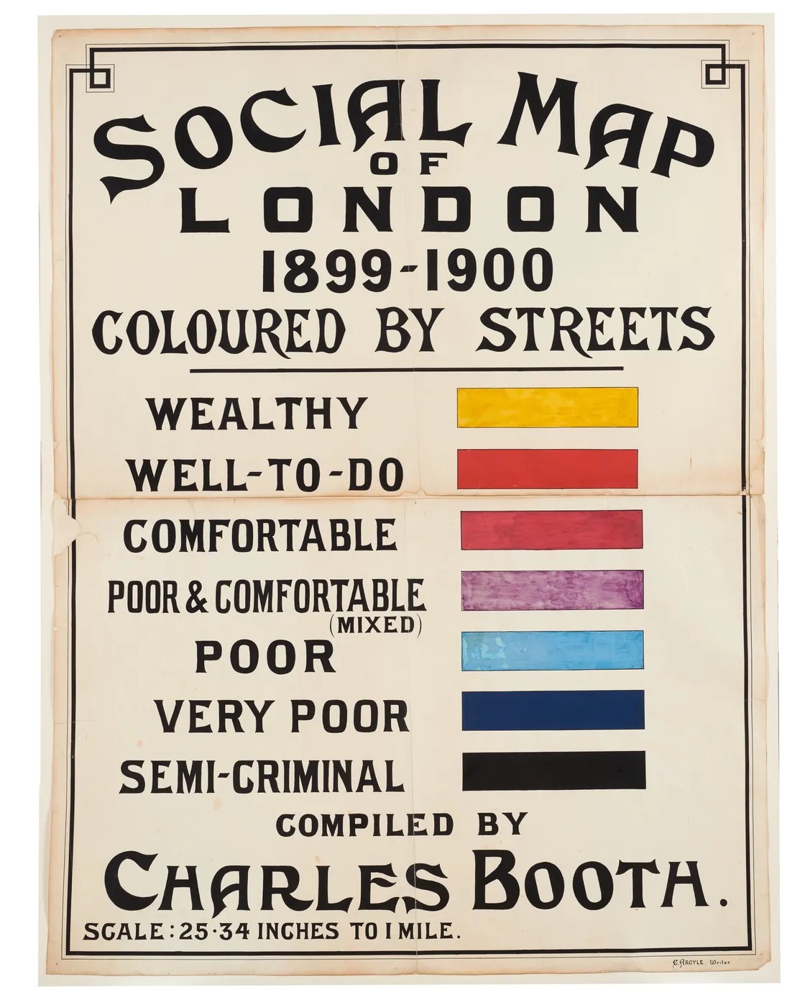

Geoepistemology (Wiliam Rankin) & Visual Response

Figure 1: Author's annotations of Rankin's text. (Rankin W, 2016)
1.0 What is the most important or meaningful part of the text to you? Why?
"more accurate knowledge translates directly into a better user experience and more political power". I think this is a significant part of the text where Rankin's is acknowledging that the person who holds the "truth" or "accurate knowledge" has more power and influence. Seamlessly segwaying to his main frame of thought which discusses how this knowledge is often controlled and manipulated by institutions, which raises questions on the validity of these "truths" and how that affects power dynamics in society.
2.0 What do you think is the main idea the author wants to convey?
- question --> test (B) --> result (A)
I understand that Rankin's idea on knowledge accuracy is not by obsessing with (A) instead to look at (B) and evaluate how each testing method can change the results. Only after you've done that could you paint a clearer view of the results. I think Rankin's wants us to not take things at face value, but to question the methods and processes that lead to the "truth" or "accurate knowledge". By doing so, we can better understand the underlying power structures and biases that may be at play in the dissemination of information.
3.0 How can it be useful to you in your work?
I see Rankin's work as a thought piece that challenges readers to confront their own perception of knowledge. Yes, an article or source may be from a realiable site like the Smithsonian but how did it get there? What are the biases and assumptions that went into its creation and dissemination? HopefullyS, in my own work I too am able to challenge my readers on their relationship with time and work.

Figure 2: The north-east sheet depicting areas like Hampstead and Paddington. London Museum (2026).

Figure 3: Social map of London from 1899-1900 by Charles Booth, showing streets classified by wealth status using different colors for categories like wealthy, poor, and semi-criminal. London Museum (2026).

Figure 4: Author's drawing of the legend in Booth's map.
4.0 What is the map and what does it represent?
It is a descriptive Map of London Poverty, designed by Charles Booth, is an important cartographic record of the socioeconomic classification of London in the late 19th century. This cartographic record depicts social disparities in the form of color-coded streets on the basis of wealth (LSE, 2026a). This project came out of his curiousity contesting the london’s government report that poverty level was at 20%, a number he thought was too high compared to his perception, little did he know that through his research he found the number to be closer to 30% which is higher that previously reported!
5.0 Is it neutral?
While not an entirely objective map, it depicts the view of middle-class reformers on the poor, as seen through the lens of authority. It is also clear that data was subject to bias, as policemen and School Board visitors were relied on as sources (London Museum, 2026).
6.0 In what ways is it “trustworthy knowledge”?
I would consider it a "trustworthy knowledge" through Booth's tripartite methodology (LSE, 2026c). Triangulation of interviews with factories, visits to homes, and 450 notebooks of qualitative observation provided an empirical base, which allowed debunk those underestimated poverty stats officially compiled by the government poverty statistics (LSE, 2026b).
7.0 Whose voices do I aim to represent in my work?
The friction of indigenous Social Clocks and Western Digital Work Clocks will be portrayed as experienced by workers in the former colonies. This will bring to the foreground the inherent experience of temporal friction.
8.0 In what ways will my project be “trustworthy knowledge?
My project establishes its trustworthiness by triangulating historical studies on colonial clock-time, and by drawing on current studies on bias in digital interface design. Establishing that the infographic has its basis in history as well as in technology.
9.0 Will I include my own voice?
I would like to keep role as a visual translator to be neutral. I hope my findings would let people evaluate which aspects of temporal experience are most significant in the context of pre-colonial and postcolonial work environments.
References
- London Museum (2026) How Charles Booth Mapped London’s Poverty. Available at: https://www.londonmuseum.org.uk/collections/london-stories/how-charles-booth-mapped-london-poverty/ (Accessed: 12 February 2026).
- LSE (2026a) Explanatory Chart for the Map of London Poverty. Available at: https://www.lse.ac.uk/library/assets/documents/booth-explanatory-chart.pdf (Accessed: 12 February 2026).
- LSE (2026b) What were the Poverty Maps?. Available at: https://booth.lse.ac.uk/learn-more/what-were-the-poverty-maps (Accessed: 12 February 2026).
- LSE (2026c) What was the Inquiry?. Available at: https://booth.lse.ac.uk/learn-more/what-was-the-inquiry (Accessed: 12 February 2026).
- Rankin, W. (2016), After the Map: Cartography, Navigation, and the Transformation of Territory in the Twentieth Century. Chicago: University of Chicago Press, p. 2.